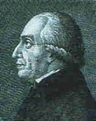

جانفي 20, 2024
جانفي 20, 2024
جان باتيست دوني الذي درس الدكتوراه في الرياضيات وكان بارعا في الفلك واتخذ من الطب هواية له ويُعرف بين العلماء بأول من قام بعمليه نقل الدم من الحيوان للأنسان
يتحدث الكتاب عن تجارب نقل الدم بين الدجاج وبين الحيوانات من قبل العديد من العلماء نشرهم لتلك التجارب في اوراق ومجلات علميه قرأ دوني عن هذه التجارب وتجذب اهتمامه ويبدأ بحثه في مجال نقل الدم وتطور فيه ونجح الى ان مرض فتى بالحمى ونقل له دم من حمل لأول مره يحدث هذا في التاريخ ونجحت التجربه
ظننت ان الكتاب يتحدث عن عمليه نقل الدم وكيف استطاع عالم بارع النجاح في نقل الدم من حيوان الى انسان ولكن هذه كانت البدايه فقط
التي حدثت لدوني بعد ان تم استدعائه لعلاج شاب في الرابعه والثلاثين مصاب بالجنون عن طريق نقل الدم – ولكنه بعد نقل الدم له يصاب بالتشجنات ويموت ويتهم بقتله!- بعد ذلك جرت العديد من المحاكمات لتبرئه دوني ومعرفه الحقيقه بعد حادثه وفاة الشاب جُرم علم نقل الدم وحُرم من قبل البابا في فرنسا وفي اوربا كامله لمدة 150 سنة
قرأت مُلخص الكتاب في تطبيق اسمه اخضر -بالمناسبه هذا افضل اختراع عرفته البشريه- وقد شدتني المعلومات المطروحه وفي ظني انه اعطى التجارب حقها من الحديث ولم يتحدث عن القصة المأساويه فقط انصح بقراءة الكتاب للمهتمين بالعلوم والعلماء